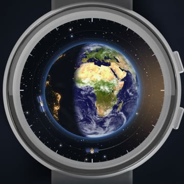
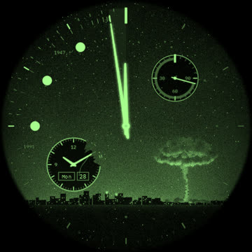

Old-school developer, crafter. The serious version of me lives at alexisgobe.github.io. This one makes small, mostly usefuluseless things in the eveningsnights, just to see if they can be done.
// things i made. hover one.
-

-

you found the invisible line. now go make something small.